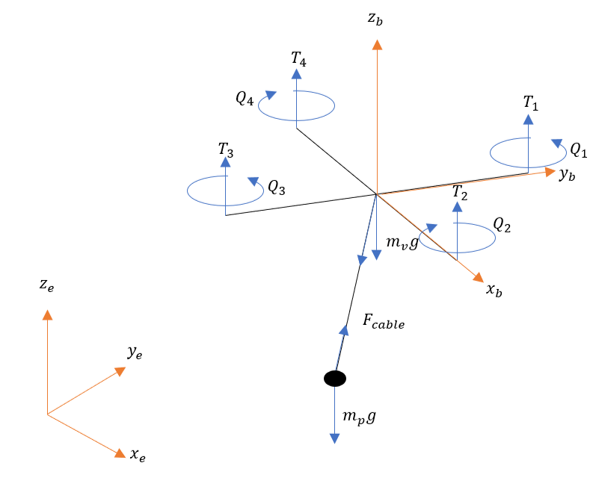
Load transportation with an elastic cable
During my thesis I tried to find what the influnce was of the elasticity of the cable on the UAV behaviour. for this A full non linear model was created. This model was then used to design an LQR controller around the hovering position.
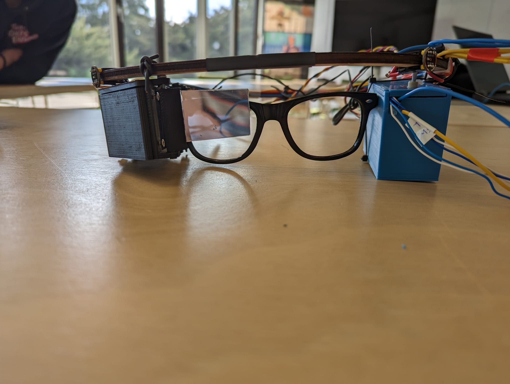
Smart glases the help hearing impaired people
During this project in module 11 we created smart glasses (Google glasses) which could help people with bad hearing to "see" the direction of the sound.
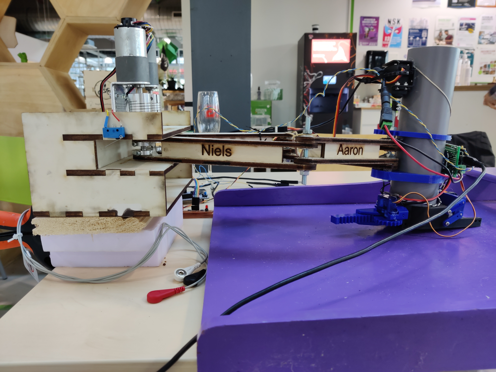
Sjoelrobot
This project was made for a patient with Duchenne, for whom we had to design a device to help them with a certain task or help them play a centrain game (Sjoelen).
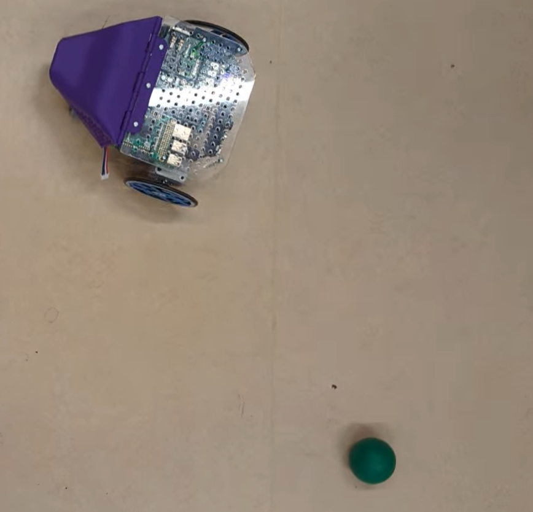
Relbot
Create the software for an robot in softrealtime and hard realtime using a combination of ROS2 and the Xenomai frame work. To let the Relbot follow a green bal.

Maximum Power Point Trackers(MPPT)
I contiued on an open source MPPT design to make it optimal and aplicable to our project.
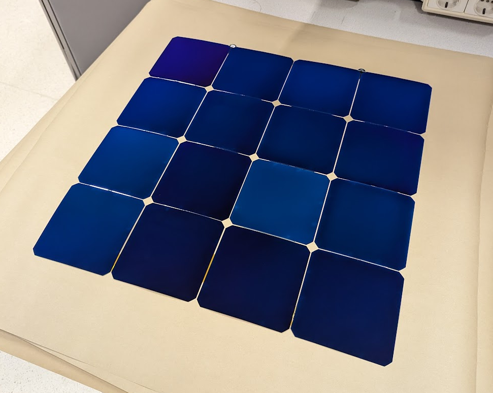
Solar panels
For Solar Boat Twente we had to create a new solardeck, this included soldering the cells, laminating the cells and testing the cells.

Wiring
One of the big challenges was rewiring all the components for the new boat for this a nice test rig was created
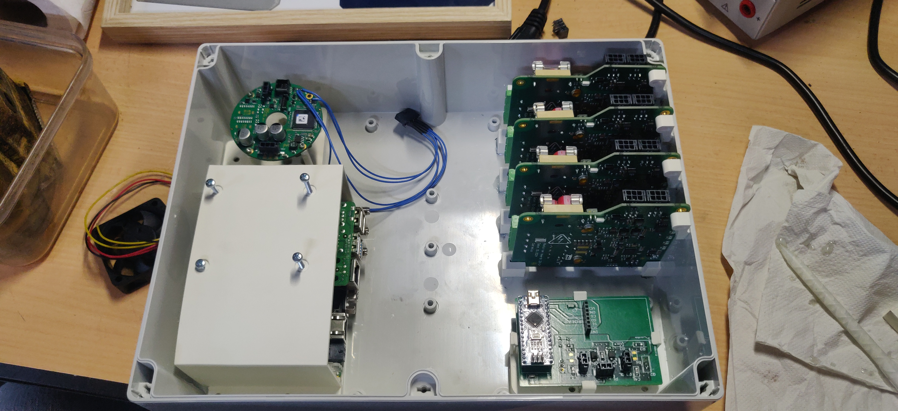
Backhedgebox
Weight is key part in the power consumption of the boat, and modularity is key for easy maintence, by combining 4 boxes into one the weight and complexity could be significantly reduced.
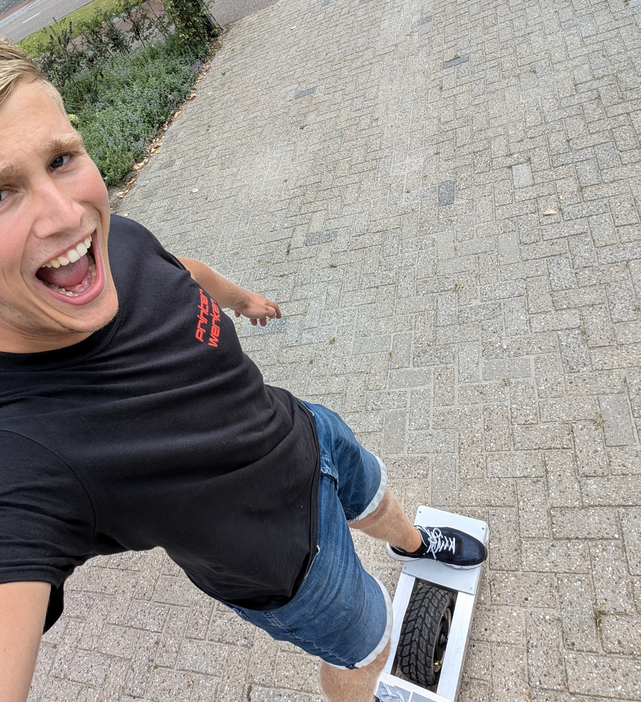
Onewheel
I have a passion for snowboarding surfing or anything that uses a board. Thats why I decided to build my own self balancing onewheel from scratch
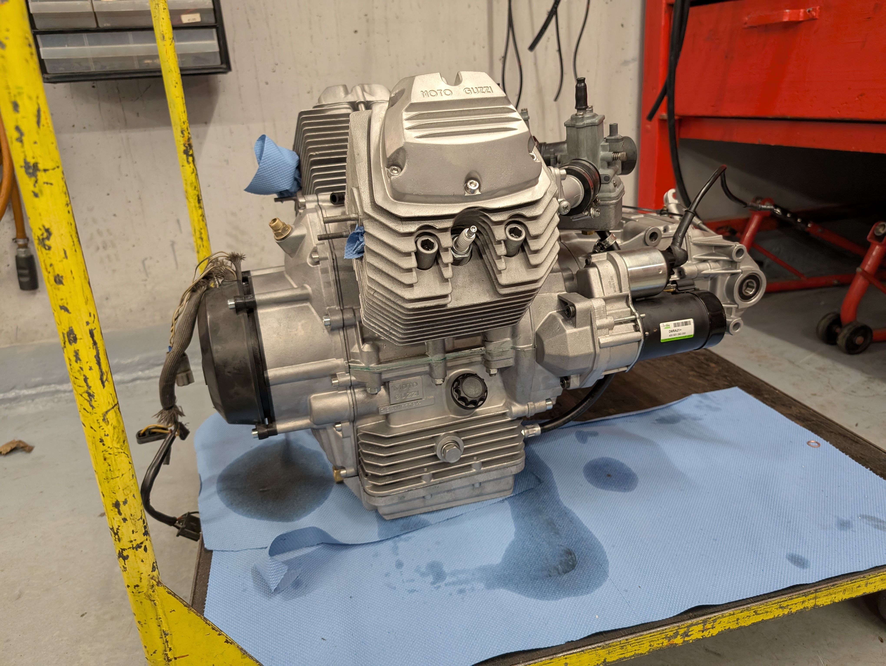
Motorcycle
I have an old Moto guzzi V50 caferacer which had some problems. I didn't know much of motorcycles so I decided to learn how it works by completly restoring this bike to these days standards.
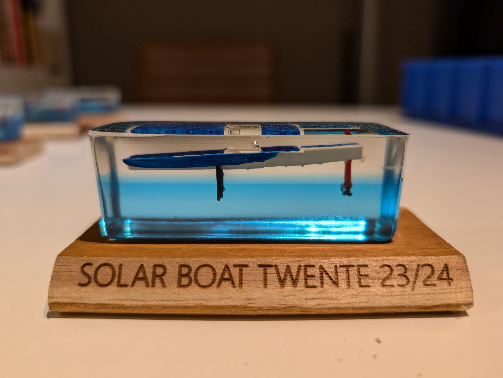
Mini solarboat
As a present to everyone in the team I wanted to make something special that they would be able to keep for a long time after solar boat. That is why I made these mini resinprinted solarboats casted in resin.
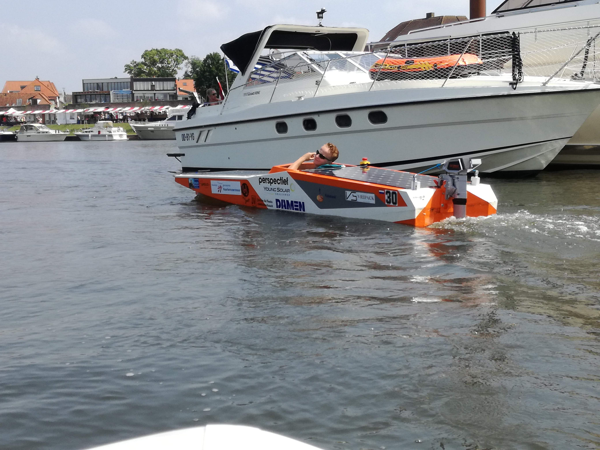
Young solar challenge
During my second year in O&O a participated in the young solar challenge. Where I was mainly responsable for the electronics.
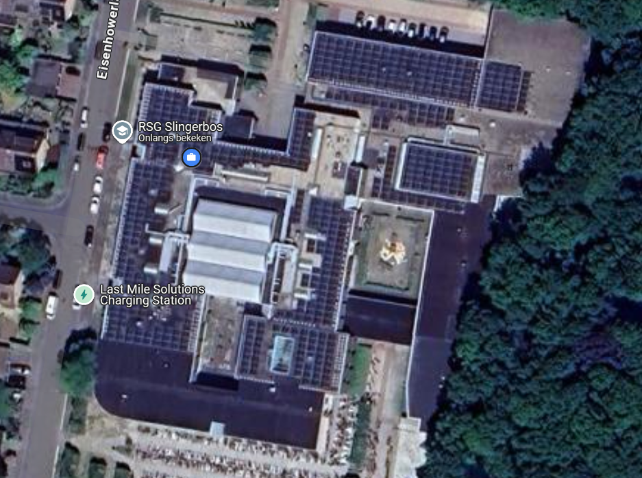
Solar panels for ontop of the highschool
At my highschool they wanted to place solarpanels ontop of the roof. Here we did everything from finding the companies until doing the negotiations.
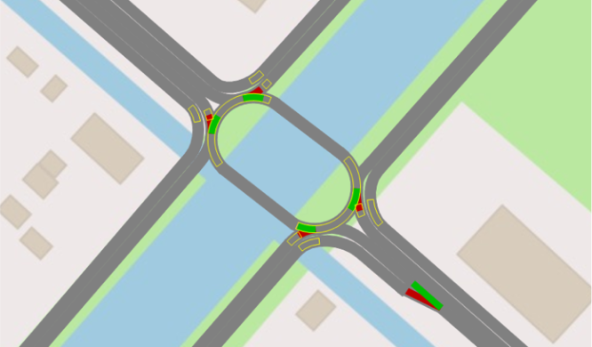
Optimization traficlight
For the province of Noord Holland we had to design a new crossing at a not well functioning crossing with a high ephasisis on the bike highway that would be build